Chapter XIII#
The Magnetic Field Produced by Electric Currents#
Experimental Basis.#
480. So far the subjects of electricity and magnetism have been developed as entirely separate groups of physical phenomena. Although the mathematical treatment in the two cases has been on parallel lines, we have not had occasion to deal with any physical links connecting the two series of phenomena.
The first definite link of the kind was discovered by Oersted in 1820. Oersted’s discovery was the fact that a current of electricity produced a magnetic field in its neighbourhood.
The nature of this field can be investigated in a simple manner. We first double back on itself a wire in which a current is flowing (fig. 118, 1). It is found that no magnetic field is produced.
Next we open the end into a small plane loop \(PQRS\) (fig. 118, 2). It is found that at distances from the loop which are great compared with its linear dimensions, such a loop exercises the same magnetic forces as a magnetic particle of which the axis is perpendicular to the plane \(PQRS\), and the moment is jointly proportional to the strength of the current and to the area \(PQRS\). The single current flowing in the circuit \(OPQRST\) is obviously equivalent to two currents of equal strength, the one flowing in the circuit \(OPST\) obtained by joining the points \(P\) and \(S\), and the other flowing in the closed circuit \(PQRSP\). The former current is shewn, by the preliminary experiment, to have no magnetic effects, so that the whole magnetic field may be ascribed to the small closed circuit \(PQRS\).
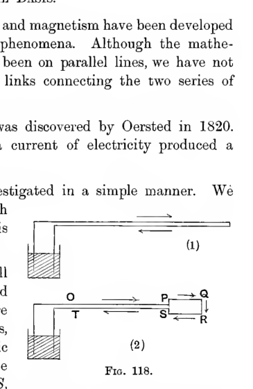
Two current-carrying wire arrangements are compared. In the upper sketch a wire doubles back on itself, with equal opposite-directed current segments running side by side and producing no external magnetic effect. In the lower sketch the return end is opened into a small rectangular loop labeled \(P,Q,R,S\), attached to a larger bent lead labeled \(O,T\); this loop is the part responsible for the observed magnetic action.
481. Instead of regarding this field as due to a particle of moment jointly proportional to the area \(PQRS\) and to the current-strength, we may regard it as due to a small magnetic shell, coinciding with the area \(PQRS\), and of strength simply proportional to the current flowing in \(PQRS\).
482. Next, let us consider the current flowing in a closed circuit of any shape we please, and not necessarily in one plane. Let us cover in the closed circuit by an area of any kind having the circuit for its boundary, and let us cut up this area into infinitely small meshes by two systems of lines. A current of strength \(i\) flowing round the boundary circuit, is exactly equivalent to a current of strength \(i\) flowing round each mesh in the same direction as the current in the boundary. For, if we imagine this latter system of currents in existence, any line such as \(AB\) in the interior will have two currents flowing through it, one from each of the two meshes which it separates, and these currents will be equal but in opposite directions. Thus all the currents in the lines which have been introduced in the interior of the circuit annihilate one another as regards total effect, while the currents in those parts of the meshes which coincide with the original circuit just combine to reproduce the original current flowing in this circuit.
Thus the original circuit is equivalent, as regards magnetic effect, to a system of currents, one in each mesh. By taking the meshes sufficiently small, we may regard each mesh as plane, so that the magnetic effect of a current circulating in it is known: the magnetic effect of the current in a single mesh is that of a magnetic shell of strength proportional to the current and coinciding in position with the mesh. Thus, by addition, we find that the whole system of currents produces the same magnetic effects as a single magnetic shell coinciding with the surface of which the original current-circuit is the boundary, and of strength proportional to the current. This shell, then, produces the same magnetic effects as the original single current. The magnetic shell is spoken of as the “equivalent magnetic shell.”
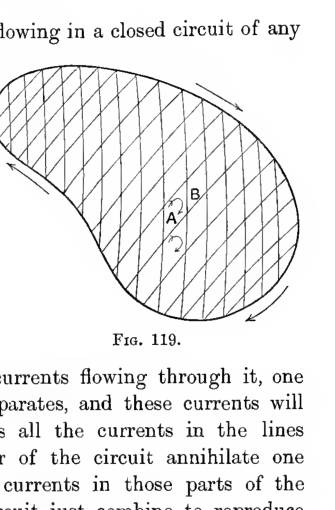
An irregular closed boundary is filled with a hatched surface divided conceptually into small meshes. One interior line segment is marked \(AB\) to illustrate how adjacent mesh currents cancel along internal boundaries, leaving only the boundary current and the equivalent magnetic shell over the spanning surface.
Thus we have obtained the following result:
A current flowing in any closed circuit produces the same magnetic field as a certain magnetic shell, known as the equivalent magnetic shell. This shell may be taken to be any shell having the circuit for its boundary, its strength being uniform and proportional to that of the current.
Law of Signs.#
If an observer is imagined to stand on that side of the equivalent magnetic shell which contains the negative poles, the current flows round him in the same direction as that in which the sun moves round an observer standing on the earth’s surface in the northern hemisphere.
We can also state the law by saying that to drive an ordinary right-handed screw (e.g. a cork-screw) in the direction of magnetisation of the shell, the screw would have to be turned in the direction of the current.
The law of signs expresses a fact of nature, not a mathematical convention. At the same time, it must be noticed that the law does not express that nature shews any preference in this respect for right-handed over left-handed screws. Two conventions have already been made in deciding which are to be called the positive directions of current and of magnetisation, and if either of these conventions had been different, the word “right-handed” in the law of signs would have had to be replaced by “left-handed.”
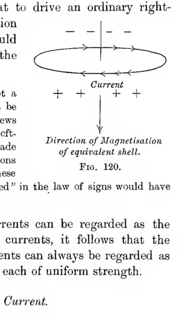
A horizontal current loop is shown with arrows indicating the circulation of current. Positive signs are marked on the lower side of the loop and negative signs on the upper side, while a vertical arrow through the centre marks the direction of magnetisation of the equivalent shell. The diagram illustrates the right-hand screw rule for relating current direction to shell magnetisation.
483. Since, by § 346, any system of currents can be regarded as the superposition of a number of simple closed currents, it follows that the magnetic field produced by any system of currents can always be regarded as that produced by a number of magnetic shells, each of uniform strength.
Electromagnetic Unit of Current.#
484. If \(i\) is the strength of the current flowing in a circuit, and \(\phi\) the strength of the equivalent magnetic shell, then
where \(k\) is a constant, which is positive if the law of signs just stated has been obeyed in determining the signs of \(\phi\) and \(i\).
In the system of units known as Electromagnetic, we take \(k = 1\), and define a unit current as one such that the equivalent magnetic shell is of unit strength. The strength of a current, in these units, is therefore measured by its magnetic effects. Obviously the strength measured in this way will be entirely different from the strength measured by the number of electrostatic units of electricity which pass a given point. This latter method of measurement is the electrostatic method. A full discussion of systems of units will be given later (§ 584); at present it may be stated that a current which is of unit strength when measured electromagnetically in c.g.s. units is of strength \(3 \times 10^{10}\) (very approximately) when measured electrostatically. The practical unit of current, the ampere, is, as already stated, equal to \(3 \times 10^9\) electrostatic units of current, so that the electromagnetic unit of current is equal to 10 amperes.
A unit charge of electricity in electromagnetic units will be the amount of electricity that passes a fixed point per unit time in a circuit in which an electromagnetic unit of current is flowing. It is therefore equal to \(3 \times 10^{10}\) electrostatic units.
Work Done in Threading a Circuit.#
485. In fig. 121 let the thick line represent a circuit in which a current is flowing, and let the thin line through the point \(P\) represent the outline of any equivalent magnetic shell, \(P\) being any point in the shell. Let us imagine that we thread the circuit by any closed path beginning and ending at \(P\), this path being represented by the dotted line in the figure. At every point of this path except \(P\), we have a full knowledge of the magnetic forces.
It will be convenient to regard the shell as having a definite, although infinitesimal, thickness at \(P\). Let \(P_+\), \(P_-\) denote the points in which the path intersects the positive and negative faces of the shell. Then we may say that the forces are known at all points of the path, except over the small range \(P_+P_-\).
The original current can, however, be represented by any number of equivalent magnetic shells, for any shell is capable of representing the current, provided only it has as boundary the circuit in which the current is flowing.
Let any other equivalent shell cut the path in the points \(Q_+Q_-\). From our knowledge of the forces exerted by this shell, we can determine the forces exerted by the current at all points of the path except those within the range of \(Q_+Q_-\). In particular we can determine the forces over the range \(P_+P_-\), and it is at once obvious that on passing to the limit and making the range \(P_+P_-\) infinitesimal, the forces at the points \(P_+\), \(P_-\), and at all points on the infinitesimal range \(P_+P_-\) must be equal. Obviously the forces are also finite.
The work done on a unit pole in taking it round the complete circuit from \(P_-\) back to \(P_-\) is accordingly the same as that done in taking it from \(P_-\) round the path to \(P_+\). This can be calculated by supposing the forces to be exerted by the first equivalent shell, for the path is entirely outside this shell. If the potential due to the shell is \(\Omega_{P_+}\) at \(P_+\) and is \(\Omega_{P_-}\) at \(P_-\), the work done is \(\Omega_{P_+} - \Omega_{P_-}\).
Now \(\Omega\), the potential of the shell at any point is, as we know (§ 419), equal to \(i\omega\), where \(\omega\) is the solid angle subtended by the shell and \(i\) is the current, measured in electromagnetic units. The change in the solid angle as we pass from \(P_-\) to \(P_+\) is, as a matter of geometry, equal to \(4\pi\). Thus
The work done in taking a unit pole round the path described is accordingly \(4\pi i\).
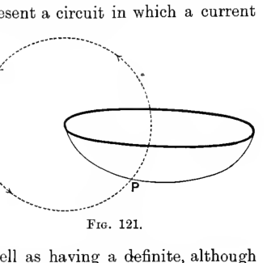
A thick oval current circuit is intersected by a dotted closed path that loops around and returns to a point \(P\) on the equivalent shell. The figure visualizes the process of threading a circuit by a closed path in order to compute the work done on a unit magnetic pole.
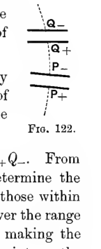
A narrow cross-section sketch shows a path cutting through the two faces of an equivalent magnetic shell. The crossings are marked \(Q_-, Q_+, P_-, P_+\) to distinguish entry through the negative or positive face and to define the infinitesimal range across which the shell potential jumps.
Magnetic Potential of a Field Due to Currents.#
486. Let us fix upon a definite equivalent shell to represent a current of strength \(i\). Let us bring a unit pole from infinity to any point \(A\), by a path which cuts the equivalent shell in points \(P, Q, \ldots Z\). For simplicity, let us at first suppose that at each of these points the path passes from the positive to the negative side of the shell, and let the points on the two sides of the shell be denoted, as before, by \(P_+, P_-\); \(Q_+, Q_-\); and so on.
Then, if \(\Omega\) denotes the magnetic potential due to the equivalent shell, the work done in bringing the unit pole from infinity to \(P_+\) will be \(\Omega_{P_+}\). In the limit \(P_+\) and \(P_-\) are coincident, so that the work in taking the unit pole on from \(P_+ \) to \(P_-\) is infinitesimal. In taking it from \(P_-\) to \(Q_+\), work is done of amount \(\Omega_{Q_+} - \Omega_{P_-}\), from \(Q_+\) to \(Q_-\) the work is infinitesimal, and so on, until ultimately we arrive at \(A\). Thus the total work done in bringing the unit pole to \(A\) is
or, rearranging, is
Now each of the terms \(\Omega_{P_+} - \Omega_{P_-}\), \(\Omega_{Q_+} - \Omega_{Q_-}\), etc. is equal by equation (410) to \(4\pi i\), so that if \(n\) is the number of these terms, the whole expression is equal to
Replacing \(\Omega_A\) by \(i\omega\), where \(\omega\) is the solid angle subtended by the shell at \(A\), we find for the potential at \(A\) due to the electric current
If the path cuts the equivalent shell \(n\) times in the direction from \(+\) to \(-\), and \(m\) times in the opposite direction, the quantity \(n\) must be replaced by \(n - m\).
Expression (411) shews that the potential at a point is not a single-valued function of the coordinates of the point. The forces, which are obtained by differentiation of this potential, are, however, single-valued.
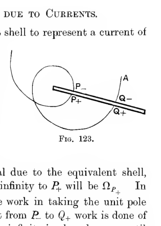
A curved path from infinity to a point \(A\) cuts an equivalent shell several times. Each crossing is marked on both faces, such as \(P_-, P_+\) and \(Q_-, Q_+\), to show how the magnetic potential changes by fixed increments when the path pierces the shell.
Current in Infinite Straight Wire.#
487. As an illustration of the results obtained, let us consider the magnetic field produced by a current flowing in a straight wire which is of such great length that it may be regarded as infinite, the return current being entirely at infinity.
Let us take the line itself for axis of \(z\). Any semi-infinite plane terminated by this line may be regarded as an equivalent magnetic shell. Let us fix on any plane and take it as the plane of \(xz\).
Consider any point \(P\) such that \(OP\), the shortest distance from \(P\) to the axis of \(z\), makes an angle \(\theta\) with \(Ox\). The cone through \(P\) which is subtended by the semi-infinite plane \(zOx\), is bounded by two planes, one a plane through \(P\) and the axis of \(z\); the other a plane through \(P\) parallel to the plane \(zOx\). These contain an angle \(\pi - \theta\), so that the solid angle subtended by the plane \(zOx\) at \(P\) is \(2(\pi - \theta)\). Giving this value to \(\omega\) in formula (411), we obtain as the magnetic potential at \(P\)
Since \(\dfrac{\partial \Omega}{\partial r} = 0\) it is clear that there is no radial magnetic force, and the force at any point in the direction of \(\theta\) increasing is
This result is otherwise obvious. If the work done in taking a unit pole round a circle of circumference \(2\pi r\) is to be \(4\pi i\), the tangential force at every point must be \(\dfrac{2i}{r}\).
488. This result admits of a simple experimental confirmation. Let \(PQR\) be a disc suspended in such a way that the only motion of which it is capable is one of pure rotation about a long straight wire in which a current is flowing. On this disc let us suppose that an imaginary unit pole is placed at a distance \(r\) from the wire. There will be a couple tending to turn the disc, the moment of this couple being \(\dfrac{2i}{r} \times r\) or \(2i\). Similarly if we place a unit negative pole on the disc there is a couple \(-2i\).
On placing a magnetised body on the disc, there will be a system of couples consisting of one of moment \(2i\) for every positive pole and one of moment \(-2i\) for every negative pole. Since the total charge in any magnet is nil, it appears that the resultant couple must vanish, so that the disc will shew no tendency to rotate. This can easily be verified.
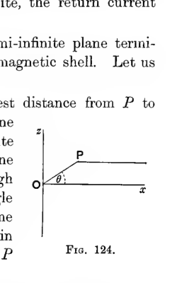
The geometry for a point near an infinitely long straight current is drawn in the \(xz\) plane. The wire is the vertical axis through \(O\), the horizontal line is the \(x\)-axis, and a point \(P\) is connected so that the angle \(\theta\) between \(OP\) and the positive \(x\) direction can be used to evaluate the magnetic potential.
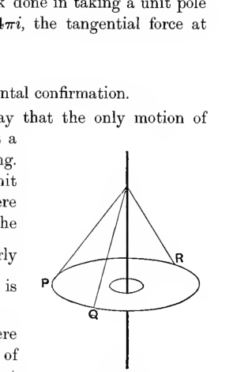
A circular disc labeled by points \(P,Q,R\) is suspended around a long vertical wire passing through its centre. Straight generator lines from the suspension point to the edge indicate a freely turning disc used to test the torque exerted by the magnetic field of a current in the wire.
Circular Current.#
489. Let us find the potential due to a current of strength \(i\) flowing in a circle of radius \(a\). The equivalent magnetic shell may be supposed to be a hemisphere of radius \(a\) bounded by this circle.
The potential at any point on the axis of the circle can readily be found. For at a point on the axis distant \(r\) from the centre of the circle, the solid angle \(\omega\) subtended by the circle is given by
so that the potential at this point is
This expression can be expanded in powers of \(r\) by the binomial theorem. We obtain the following expansions:
if \(r < a\),
if \(r > a\),
From this it is possible to deduce the potential at any point in space. Let us take spherical polar coordinates, taking the centre of the circle as origin, and the axis of the circle as the initial line \(\theta = 0\). Inside the sphere \(r = a\), the potential is a solution of \(\nabla^2\Omega = 0\) which is symmetrical about the axis \(\theta = 0\), and remains finite at the origin. It is therefore capable of expansion in the form
Along the axis we have \(\theta = 0\), so that this assumed value of \(\Omega\) becomes
and the coefficients may be determined by comparison with equation (412).
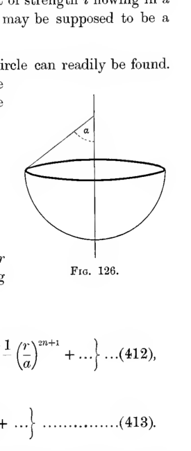
A hemispherical equivalent shell is drawn beneath a circular current loop of radius \(a\), with the symmetry axis vertical through the centre. A slant line from the axis to the rim makes the angle \(\alpha\), illustrating the solid angle and axial potential of a circular current.
Thus we obtain for the potentials,
when \(r < a\), and
when \(r > a\).
At points so near to the origin that \(\dfrac{r^3}{a^3}\) may be neglected, the potential is
where \(z = r\cos \theta\), and the magnetic force is a uniform force
parallel to the axis.
Solenoids.#
490. A cylinder, wound uniformly with wire through which a current can be sent, is called a “solenoid.”
Consider first a circular cylinder of radius \(a\) and height \(h\), having a wire coiled round it at the uniform rate of \(n\) turns per unit length, the wire carrying a current \(i\). Let \(z\) be a coordinate measuring the distance of any cross-section from the base of the solenoid. Then the small layer between \(z\) and \(z + dz\), being of thickness \(dz\), will contain \(ndz\) turns of wire. The currents flowing in all these turns may be regarded as a single current \(nidz\) flowing in a circle, this circle being of radius \(a\) and at distance \(z\) from the base of the solenoid. The magnetic potential of this current may be written down from the formula of the last section, and the potential of the whole solenoid follows by integration.
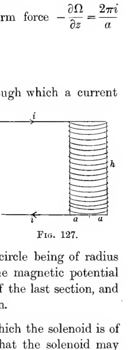
A cylindrical coil is shown in side view, with current entering at the top and leaving at the bottom while the winding spirals around the cylinder. The radius \(a\) is marked at the base and the height \(h\) at the side, defining the geometry of a finite solenoid.
491. Endless Solenoid. In the limiting case in which the solenoid is of infinite length (or in which the ends are so far away that the solenoid may be treated as though it were of infinite length), the field can be determined in a simpler manner.
Consider first the field outside the solenoid. In taking a unit pole round any path outside the solenoid which completely surrounds the solenoid, the work done is, by § 485, \(4\pi n i\). The current flowing per unit length of the solenoid is \(ni\). In general we are concerned with cases in which this is finite \(n\) being very large and \(i\) being very small. The quantity \(4\pi n i\) may accordingly be neglected, and we can suppose that the work done in taking unit pole round the solenoid is zero.
It follows that the force outside the solenoid can have no component at right angles to planes through the axis, and clearly, by a similar argument, the same must be true inside the solenoid. Hence the lines of induction must lie entirely in the planes through the axis of the solenoid. From symmetry, there is no reason why the lines of induction at any point should converge towards, rather than diverge from, the axis, or vice versa. Hence the lines of induction will be parallel to the axis, and the force at every point will be entirely parallel to the axis.
Let the lines \(PQR\), \(P'Q'R'\) in fig. 128 be radii meeting the axis, the lines \(PP'\), \(QQ'\), \(RR'\) being parallel to the axis and each of length \(\epsilon\). Let the magnetic forces along these lines be \(F_1\), \(F_2\) and \(F_3\) respectively.
In taking unit pole round the closed path \(PP'Q'QP\) the work done is \(F_1\epsilon - F_2\epsilon\), and since this must vanish, we must have \(F_1 = F_2\). Hence the force at all points outside the solenoid must be the same; it must be the same as the force at infinity and must consequently vanish. Thus there is no force at all outside the solenoid.
In taking unit pole round the closed path \(PP'R'RP\), the work done is \(F_3\epsilon\), and this must be equal to \(4\pi n i\epsilon\), so that we must have \(F_3\epsilon = 4\pi n i\epsilon\). Thus the force at any point inside the solenoid is a force \(4\pi n i\) parallel to the axis.
Thus the field of force arising from an infinite solenoid consists of a uniform field of strength \(4\pi n i\) inside the solenoid, there being no field at all outside. The construction of a solenoid accordingly supplies a simple way of obtaining a uniform magnetic field of any required strength.
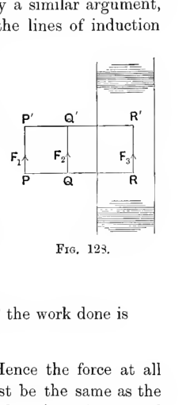
A rectangular path is drawn partly outside and partly inside a long solenoid. The vertical shaded cylinder on the right represents the solenoid, while points \(P,Q,R\) and \(P',Q',R'\) mark radial segments and axial displacements used to compare the forces \(F_1\), \(F_2\), and \(F_3\) and prove that the field vanishes outside but is uniform inside.
Galvanometers.#
The Tangent Galvanometer.#
493. In the tangent galvanometer the current flows in a vertical circular coil, at the centre of which a small magnetic needle is pivoted so as to be free to turn in a horizontal plane.
Before use, the instrument is placed so that the plane of the coil contains the lines of magnetic force of the earth’s field. The needle accordingly rests in the plane of the coil. When the current is allowed to flow in the coil a new field is originated, the lines of force being at right angles to the plane of the coil and the needle will now place itself so as to be in equilibrium under the field produced by the superposition of the two fields - the earth’s field and the field produced by the current.
As the needle can only move in a horizontal plane, we need consider only the horizontal components of the two fields. Let \(H\), as usual, denote the horizontal component of the earth’s field. Let \(i\) be the current flowing in the coil, measured in electromagnetic units, let \(a\) be the radius and let \(n\) be the number of turns of wire. Near the centre of the coil the field produced by the current is, by § 489, a uniform field at right angles to the plane of the coil, of intensity \(\dfrac{2\pi in}{a}\). The total horizontal field is therefore compounded of a field of strength \(H\) in the plane of the coil, and a field of strength \(\dfrac{2\pi in}{a}\) at right angles to it.
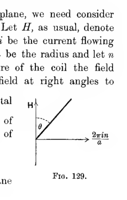
A vector diagram shows the horizontal earth-field \(H\) drawn vertically and the field due to the coil, \(\dfrac{2\pi in}{a}\), drawn horizontally. Their resultant makes an angle \(\theta\) with the plane of the coil, illustrating the tangent-law used by the instrument.
The resultant will make an angle \(\theta\) with the plane of the coil, where
and the needle will set itself along the lines of force of the field. Thus the needle will, when in equilibrium, make an angle \(\theta\) with the plane of the coil, where \(\theta\) is given by equation (416). If we observe \(\theta\) we can determine \(i\) from equation (416). We have
where \(G\) is a constant, known as the galvanometer constant, its value being \(\dfrac{2\pi n}{a}\).
The instrument is called the tangent galvanometer from the circumstance that the current is proportional to the tangent of the angle \(\theta\).
The tangent galvanometer has the advantage that all currents, no matter how small or how great, can be measured without altering the adjustment of the instrument. A disadvantage is that the readings are not very sensitive when the currents to be measured are large - only a very small change in the reading is produced by a considerable change in the current. Let the current be increased by an amount \(di\), and let the corresponding change in \(\theta\) be \(d\theta\), then from equation (417),
so that if \(i\) is large, \(\dfrac{d\theta}{di}\) is small. Thus, although the instrument may be used for the measurement of large currents, the measurements cannot be effected with much accuracy.
A second defect of the instrument is caused by the circumstance that the field produced by the current is not absolutely uniform near the centre of the coil. If \(a\) is the radius of the coil, and \(b\) the distance of either pole of the magnet from its centre, the poles will be in a part of the field in which the intensity differs from that at the centre of the coil by terms of the order of \(\dfrac{b^3}{a^3}\). For instance, if the magnet is one inch long, while the coil has a diameter of 10 inches, the intensity of the field will be different from that assumed, by terms of the order of \(\left(\tfrac{1}{10}\right)^3\), so that the reading will be subject to an error of about one part in a thousand.
By replacing the single coil of the tangent galvanometer by two or more parallel coils, it is possible to make the field in the region in which the magnet moves, as uniform as we please. It is therefore possible, although at the expense of great complication, to make a tangent galvanometer which shall read to any required degree of accuracy.
The Sine Galvanometer.#
494. The sine galvanometer differs from the tangent galvanometer in having its coil adjusted so that it can be turned about a vertical axis. Before the current is sent through the coil, the instrument is turned until the needle is at rest in the plane of the coil. The coil is then in the direction of the earth’s field at the point.
As soon as a current is sent through the coil, the needle is deflected, as in the tangent galvanometer. The coil is now slowly turned in the direction in which the needle has moved, until it overtakes the needle, and as soon as the needle is again at rest in the plane of the coil, a reading is taken, giving the angle through which the coil has been turned. Let \(\theta\) be this angle, then the earth’s field may be resolved into components, \(H\cos\theta\) in the plane of the coil and \(H\sin\theta\) at right angles to this plane. Since the needle rests in the plane of the coil, the latter component must be just neutralized by the field set up by the current, this being, as we have seen, entirely at right angles to the plane of the coil. We accordingly have
so that we must have
where \(G\), the galvanometer constant, has the same meaning as before.
This instrument has the disadvantage that it cannot be used to measure currents greater than \(\dfrac{H}{G}\). It is, however, sensitive over the whole range through which it can be used: if \(d\theta\) is the increase in \(\theta\) caused by a change \(di\) in \(i\), we have
so that the greater the current the more sensitive the instrument.
The great advantage of this form of galvanometer, however, is that when the reading is taken the magnet is always in the same position relative to the field set up by the current in the coil. Thus the deviations from uniformity of intensity at the centre of the field do not produce any error in the readings obtained: they result only in the galvanometer constant having a value different from that which it has so far been supposed to have. But when once the right value has been assigned to the constant \(G\), equation (418) will be true absolutely, no matter how large the movable needle may be in comparison with the coil.
Other Galvanometers.#
495. There are various other types of galvanometers in use to serve various purposes other than the exact measurement of a current. For full descriptions of these the reader may be referred to books treating the theory of electricity and magnetism from the more experimental side. The following may be briefly mentioned here:
I. The D’Arsonval Galvanometer. This instrument is typical of a class of galvanometer in which there is no moving needle, the moving part being the coil itself, which is free to turn in a strong magnetic field. The coil is suspended by a torsion fibre between the poles of a powerful horseshoe magnet. When a current is sent through the coil, the coil itself produces the same field as a magnetic shell, and so tends to set itself across the lines of force of the permanent magnet, this motion being resisted by no forces except the torsion of the fibre.
II. The Mirror Galvanometer. This is a galvanometer originally designed by Lord Kelvin for the measurement of the small currents used in the transmission of signals by submarine cables. The design is, in its main outlines, identical with that of the tangent galvanometer, but, to make the instrument as sensitive as possible, the coil is made of a great number of turns of fine wire, wound as closely as possible round the space in which the needle moves, and the needle is suspended as delicately as possible by a fine torsion-thread. To make the instrument still more sensitive, permanent magnets can be arranged so as to neutralize part of the intensity of the earth’s field. The instrument is read by observing the motion of a ray of light reflected from a small mirror which moves with the needle: it is from this that the instrument takes its name. In the most sensitive form of this instrument a visible motion of the spot of light can be produced by a current of \(10^{-10}\) amperes.
III. The Ballistic Galvanometer. This instrument does not measure the current passing at a given instant, but the total flow of electricity which passes during an infinitesimal interval. If the needle is at rest in the plane of the coil, a current sent through the coil will establish a magnetic field tending to turn the needle out of this plane. So long as the needle is approximately in the plane of the coil, the couple acting on the needle will be proportional to the current in the coil: let it be denoted by \(ci\), where \(i\) is the current.
Then if \(\omega\) is the angular velocity of the needle at any instant, we shall have an equation of the form
where \(mk^2\) is the moment of inertia of the needle. Integrating through the small interval of time during which the current may be supposed to flow, we obtain
Here \(\Omega\) is the angular velocity with which the needle starts into motion, and \(\int i\,dt\) is the total current which passes through the coil. Thus the total flow \(\int i\,dt\) can be obtained by measuring \(\Omega\), and this again can be obtained by observing the angle through which the needle swings before coming to rest at the end of its oscillation.
Vector-Potential of a Field Due to Currents.#
496. From the formulae obtained in § 446 for the vector-potential of a uniform magnetic shell, we can at once write down expressions for the vector-potential of a field due to currents.
For, by § 483, the field due to any system of currents may be regarded as the field due to a number of shells of uniform strength, so that the vector-potential at any point will be the sum of the vector-potentials due to these different shells. Hence if \(\phi\), \(\phi'\), … are the strengths of the various shells, the vector-potential at any point \(P\) has components (cf. § 446)
where the summation is over all the shells, and \(dx', ds'\) refer to an element of the edge of a shell of strength \(\phi\), this element being at a distance \(r\) from the point \(P\).
The equations just found may clearly be replaced by
where \(ds\) is now an element of any wire or linear conductor in which a current of strength \(i\) is flowing, and the integration is now along all the conductors in the field.
By the use of equations (376), we may at once obtain the components of magnetic force or induction at any point \(x', y', z'\) in the forms
Mechanical Action in the Field.#
Ampere’s Rule for the Force from a Circuit.#
497. Let \(O(x, y, z)\) be the position of any element \(ds\) of a circuit, and let \(P\) be any point \((x', y', z')\) in free space.
From equations (420) it follows that the magnetic force at \(P\) may be regarded as made up of contributions from each element of the circuit such that the contribution from the element \(ds\) at \(O\) has components
On putting \(r^2 = (x-x')^2 + (y-y')^2 + (z-z')^2\), and differentiating, these components become
Let us denote \(\dfrac{x-x'}{r}\), \(\dfrac{y-y'}{r}\), \(\dfrac{z-z'}{r}\) by \(l_1\), \(m_1\), \(n_1\), these being the direction-cosines of the line \(OP\), and let \(\dfrac{dx}{ds}\), \(\dfrac{dy}{ds}\), \(\dfrac{dz}{ds}\) be denoted by \(l_2\), \(m_2\), \(n_2\), these being the direction-cosines of \(ds\). Then the components of force (421) become
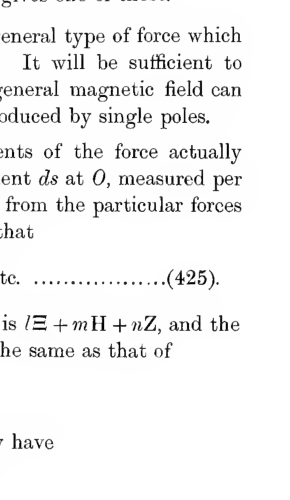
A current element \(ds\) at the point \(O\) is drawn tangent to a curved conductor, while the line \(OP=r\) runs to an external point \(P\). The angle \(\theta\) between \(ds\) and \(r\) is marked, illustrating Ampere’s law for the elemental force contribution from the circuit.
Clearly the resultant is a force at right angles both to \(OP\) and to \(ds\), and of amount
where \(\theta\) is the angle between \(OP\) and \(ds\).
Thus the total force at \(P\) may be regarded as made up of contributions such as (423) from each element of the circuit. This is known as Ampere’s law.
Mechanical Action on a Circuit.#
498. We are at present assuming the currents to be steady, so that action and reaction may be supposed to be equal and opposite. It follows that the force exerted at a unit pole at \(P\) upon the circuit of which the element \(ds\) is part, may be regarded as made up of forces of amount
per unit length, acting at right angles to \(OP\) and to \(ds\). If we have poles of strength \(m\) at \(P\), \(m'\) at \(P'\), etc., the resultant force on the circuit may be regarded as made up of contributions
per unit length. The resultant of these forces may be put in the form
where \(H\) is the resultant magnetic intensity at \(O\) of all the poles \(m\), \(m'\), etc., and \(\chi\) is the angle between the direction of this intensity and \(ds\). This resultant force acts at right angles to the directions of \(H\) and of \(ds\).
A set of forces has now been obtained such that the resultant is the resultant force acting on the circuit. It has not, however, been proved that a force (424) will actually be exerted on the element of current at \(O\); the total force on the circuit may be distributed between the different elements in a great many ways, and the equation (424) only gives one of these.
498 a. Let us now examine what is the most general type of force which will account for the action exerted on the circuit. It will be sufficient to consider the force exerted by a single pole, for a general magnetic field can always be regarded as the superposition of fields produced by single poles.
Let \(\Xi\), \(H\), \(Z\) be supposed to be the components of the force actually exerted by a single pole at \(P\) (fig. 129 a) on an element \(ds\) at \(O\), measured per unit length of the element \(ds\), and let these differ from the particular forces found in § 498 (expression (422)) by \(\Xi_0\), \(H_0\), \(Z_0\), so that
The component of force in the direction \(l, m, n\) is \(l\Xi + mH + nZ\), and the value of this integrated round the circuit must be the same as that of
integrated round the circuit. We must accordingly have
It follows that \(l\Xi_0 + mH_0 + nZ_0\) must be of the form \(\dfrac{\partial \phi}{\partial s}\), where \(\phi\) is of course a linear function of \(l, m, n\). In order that the resulting force \(\Xi, H, Z\) may be independent of the particular set of axes to which it is referred, \(\phi\) must be of the form
where \(\psi\) is a function of \(x, y, z\) only.
We must accordingly have
so that \(\Xi_0 = \dfrac{\partial^2\psi}{\partial x\partial s}\), etc., and equations (425) become
The first terms compound to give the force already found, which is perpendicular to \(r\) and \(ds\). The last terms give the force arising from the potential \(-\dfrac{\partial\psi}{\partial s}\). Since \(\psi\) can depend only on \(r\) and \(ds\), this latter force must necessarily be in the plane determined by the two lines \(r\) and \(ds\), so that the whole force must have a component out of the plane of \(r\) and \(ds\). It is almost inconceivable that such a force could be the result of pure action at a distance, so that we are led to attribute the forces acting on a circuit conveying a current to action through the medium.
Action Between Two Circuits.#
499. Before leaving this question, however, mention must be made of various attempts to resolve the forces between two circuits into forces between pairs of elements.
If the currents, say of strengths \(i, i'\), are replaced by their equivalent shells, the mutual potential energy of these shells is, by §§ 423, 446,
where \(\epsilon\) is the angle between the two elements \(ds, ds'\) and \(r\) is their distance apart. The forces tending to move the circuits in any specified way may be obtained by differentiation.
It is obvious that these forces can be accounted for if we suppose the elements \(dsds'\) to act on one another with forces of which the mutual potential energy is
This, however, is not the most general way of decomposing the resultant force. Obviously we shall get the same form for \(W\) if we assume for the mutual potential energy of the two elements
where \(\phi\) is any single-valued function of position of the elements \(ds, ds'\). Clearly \(\phi\) must have the physical dimensions of a length. Following Helmholtz, let us take \(\phi = \kappa r\), where \(\kappa\) is a constant, as yet undetermined. We have
Now
so that
Hence
where \(\theta, \theta'\) are the angles between \(r\) and \(ds, ds'\) respectively, and \(\epsilon\) as before is the angle between \(ds, ds'\), so that
where \(\phi, \phi'\) are the azimuths of \(ds, ds'\).
From this last equation, we have
and the mutual potential energy \(w\) of the two elements now assumes the form
From this value of \(w\) the system of forces can be found in the usual way. The forces acting on the element \(ds\) will consist of
(a) a repulsion \(-\dfrac{\partial w}{\partial r}\) along the line joining \(ds\) and \(ds'\);
(b) a couple \(-\dfrac{\partial w}{\partial \theta}\) tending to increase \(\theta\),
(c) a couple \(-\dfrac{\partial w}{\partial \phi}\) tending to increase \(\phi\).
If we take \(\kappa = 1\) we obtain a system of forces originally suggested by Ampere. We have
so that the forces are
(a) a repulsion \(\dfrac{ii'\,ds\,ds'}{r^2}\cos\theta\cos\theta'\) along the line joining \(ds\) and \(ds'\),
(b) a couple \(-\dfrac{ii'\,ds\,ds'}{r}\sin\theta\cos\theta'\) tending to increase \(\theta\),
and couple (c) vanishes.
If we take \(\kappa = \tfrac{3}{2}\), we obtain a system of forces derivable from the energy-function
which is the same as the energy-function of two magnetic particles of strengths \(ids\) and \(i'ds'\), multiplied by \(\tfrac{1}{2}r^2\). Thus force (a) is \(\tfrac{1}{6}r^2\) times the corresponding forces for the magnetic particles, while couples (b) and (c) are \(\tfrac{1}{2}r^2\) times the corresponding couples.
500. There are of course innumerable other possible systems of forces, but none of these seem at all plausible, so that we are almost compelled to give up all attempts at explaining the action between the circuits by theories of action at a distance. We accordingly attempt to construct a theory on the hypothesis that the forces result from the transmission of stresses by the medium. This in turn compels us to assume that the energy of the system of currents resides in the medium.
Energy.#
Energy of a System of Circuits Carrying Currents.#
501. The energy of a magnetic field, as we have seen (§ 470), is
If the energy resides in the medium, this expression may be regarded as the energy of the field, no matter how this field is produced. If the field is produced wholly by currents, expression (424) may be regarded as the energy of the system of currents. As we shall now see, it can be transformed in a simple way, so as to express the energy of the field in terms of the currents by which the field is produced.
The integral through all space, as given by expression (424), may be regarded as the sum of the integrals taken over all the tubes of induction by which space is filled. The lines of induction, as we have seen, will be closed curves, so that the tubes are closed tubular spaces.
If \(ds\) is an element of length, and \(dS\) the cross-section at any point, of a tube of unit strength, we may replace \(dxdydz\) by \(dSds\), and instead of integrating with respect to \(dS\) we may sum over all tubes. Thus expression (424) becomes
where the summation is over all unit tubes of induction. If \(H^2 = \alpha^2 + \beta^2 + \gamma^2\), we have, by the definition of a unit tube, \(\mu HdS = 1\), so that
and the integral becomes
Now \(\int Hds\) is the work performed on a unit pole in taking it once round the tube of induction, and this we know is equal to \(4\pi\Sigma' i\), where \(\Sigma' i\) is the sum of all the currents threaded by the tube, taken each with its proper sign. Thus the energy becomes
This indicates that for every time that a unit tube threads a current \(i\), a contribution \(\tfrac{1}{2}i\) is added to the energy. Thus the whole energy is
where the summation is over all the currents in the field, and \(N\) is the number of unit tubes which thread the current \(i\).
502. We have seen that a shell of strength \(\phi\) is equivalent, as regards the field produced at all external points, to a current \(i\), if \(\phi = i\). The energy of a system of currents has however been found to be \(\tfrac{1}{2}\Sigma iN\), whereas the energy of a system of shells was found (§ 450) to be
The difference of sign can readily be accounted for. Let us consider a single shell of strength \(\phi\), and let \(dS\) be an element of area, and \(dn\) an element of length inside the shell measured normally to the shell. At any point just outside the shell, let the three components of magnetic force be \(\alpha, \beta, \gamma\), the first being a component normal to the shell, and the others being components in directions which lie in the shell. On passing to the inside of the shell, the normal induction is discontinuous owing to the permanent magnetism which must be supposed to reside on the surface of the shell. Thus inside the shell, we may suppose the components of force to be \(S + \dfrac{\alpha}{\mu}, \beta, \gamma\), where \(\mu\) is the permeability of the matter of which the shell is composed, and \(S\) is the force originating from the permanent magnetism of the shell.
The contribution to the energy of the field which is made by the space inside the shell is
where the integral is taken throughout the interior of the shell; or
This can be regarded as the sum of three integrals,
(i) \(\dfrac{1}{8\pi}\iiint \mu S^2\,dn\,dS\)
(ii) \(\dfrac{1}{8\pi}\iiint \left(\dfrac{\alpha^2}{\mu} + \mu\beta^2 + \mu\gamma^2\right)\,dn\,dS \tag{427}\)
(iii) \(\dfrac{1}{8\pi}\iiint S\alpha\,dn\,dS\)
On reducing the thickness of the shell indefinitely, \(S\) becomes infinite, for at any point of the shell,
so that \(S\) becomes infinite when the thickness vanishes.
Thus on passing to the limit, the first integral
becomes infinite. This quantity is, however, a constant, for it represents the energy required to separate the shell into infinitesimal poles scattered at infinity.
The second integral vanishes on passing to the limit, and so need not be further considered.
The third integral can be simplified. We have
Now \(\int S\,dn = -4\pi\phi\), while \(\iint \alpha\,dS\) is the integral of normal induction over the shell, and may therefore be replaced by \(N\), the number of unit tubes of induction from the external field, which pass through the shell. Thus the third integral is seen to be equal to
In calculating expression (424) when the energy is that of a system of currents, the contribution from the space occupied by the equivalent magnetic shells is infinitesimal. Thus all the terms which we have discussed represent differences between the energies of shells and of circuits.
Terms such as the first integrals of scheme (427) represent merely that the energies are measured from different standard positions. In the case of the shells, we suppose the shells to have a permanent existence, and merely to be brought into position. The currents, on the other hand, have to be created, as well as placed in position. Beyond this difference, there is an outstanding difference of amount \(\phi N\) for each circuit, and this exactly accounts for the difference between expressions (425) and (426).
503. Let us suppose that we have a system of circuits, which we shall denote by the numbers \(1, 2, \ldots\). Let us suppose that when a unit current flows through \(1\), all the other circuits being devoid of currents, a magnetic field is produced such that the numbers of tubes of induction which cross circuits \(1, 2, 3, \ldots\) are
Similarly, when a unit current flows through \(2\), let the numbers of tubes of induction be
The theorem of § 446 shews at once that
If currents \(i_1, i_2, \ldots\) flow through the circuits simultaneously, and if the numbers of tubes of induction which cut the circuits are \(N_1, N_2, N_3, \ldots\), we have
The energy of the system of currents is
504. The energy required to start the single current \(i\) in circuit 1 will be \(\tfrac{1}{2}L_{11}i^2\). We might expect to obtain the value of \(L_{11}\) from equation (428) by making the two circuits \(ds\) and \(ds'\) coincide. It is, however, easily found that the value of \(L_{11}\), calculated in this way, is infinite.
This can be seen in another way. The energy of the current is
Near to the wire, at a small distance \(r\) from it, the force is \(\dfrac{2i}{r}\), so that \(\alpha^2 + \beta^2 + \gamma^2 = \dfrac{4i^2}{r^2}\). Thus the energy within a thin ring formed of coaxal cylinders of radii \(r_1, r_2\), bent so as to follow the wire conveying the current will be
where the integration with respect to \(r\) is from \(r_1\) to \(r_2\), that with respect to \(\theta\) is from \(0\) to \(2\pi\), and that with respect to \(s\) is along the wire. Integrating we find energy
per unit length, and on taking \(r_1 = 0\), we see that this energy is infinite.
505. In practice, the circuits which convey currents are not of infinitesimal cross-section, and so may not be treated geometrically as lines in calculating \(L_{11}\). The current will distribute itself throughout the cross-section of the wire, and the energy is readily seen to be finite so long as the cross-section of the wire is finite.
References.#
On the general theory of the magnetic field produced by currents:
Maxwell. Electricity and Magnetism, Vol. II, Part IV, Chaps. I, II and XIV.
J. J. Thomson. Elements of the Mathematical Theory of Electricity and Magnetism, Chap. X.
Winkelmann. Handbuch der Physik (2te Auflage), Vol. I, p. 411.
Helmholtz. Wissenschaftliche Abhandlungen, Band I.
On galvanometers:
Maxwell. Electricity and Magnetism, Vol. II, Part IV, Chaps. XV and XVI.
Encyc. Brit. 11th Edn., Art. Galvanometer, Vol. II, p. 428.
Examples.#
A current \(i\) flows in a very long straight wire. Find the forces and couples it exerts upon a small magnet.
Shew that if the centre of the small magnet is fixed at a distance \(c\) from the wire, it has two free small oscillations about its position of equilibrium, of equal period
where \(Mk^2\) is the moment of inertia, and \(\mu\) the magnetic moment, of the magnet.
Two parallel straight infinite wires convey equal currents of strength \(i\) in opposite directions, their distance apart being \(2a\). A magnetic particle of strength \(\mu\) and moment of inertia \(mk^2\) is free to turn about a pivot at its centre, distant \(c\) from each of the wires. Shew that the time of a small oscillation is that of a pendulum of length \(l\) given by
Two equal magnetic poles are observed to repel each other with a force of 40 dynes when at a decimetre apart. A current is then sent through 100 metres of thin wire wound into a circular ring eight centimetres in diameter and the force on one of the poles placed at the centre is 25 dynes. Find the strength of the current in amperes.
Regarding the earth as a uniformly and rigidly magnetised sphere of radius \(a\), and denoting the intensity of the magnetic field on the equator by \(H\), shew that a wire surrounding the earth along the parallel of south latitude \(\lambda\), and carrying a current \(i\) from west to east, would experience a resultant force towards the south pole of the heavens of amount
Shew that at any point along a line of force, the vector potential due to a current in a circle is inversely proportional to the distance between the centre of the circle and the foot of the perpendicular from the point on to the plane of the circle. Hence trace the lines of constant vector potential.
A current \(i\) flows in a circuit in the shape of an ellipse of area \(A\) and length \(l\). Shew that the force at the centre is \(\pi i l/A\).
A current \(i\) flows round a circle of radius \(a\), and a current \(i'\) flows in a very long straight wire in the same plane. Shew that the mutual attraction is \(4\pi ii'(\sec a - 1)\), where \(a\) is the angle subtended by the circle at the nearest point of the straight wire.
If, in the last question, the circle is placed perpendicular to the straight wire with its centre at distance \(c\) from it, shew that there is a couple tending to set the two wires in the same plane, of moment \(2\pi ii'a^2/c\) or \(2\pi ii'c\), according as \(c>a\) or \(<a\).
A long straight current intersects at right angles a diameter of a circular current, and the plane of the circle makes an acute angle \(a\) with the plane through this diameter and the straight current. Shew that the coefficient of mutual induction is
or \(4\pi c\tan\left(\dfrac{\pi}{4} - \dfrac{a}{2}\right)\), according as the straight current passes within or without the circle, \(a\) being the radius of the circle, and \(c\) the distance of the straight current from its centre.
Prove that the coefficient of mutual induction between a pair of infinitely long straight wires and a circular one of radius \(a\) in the same plane and with its centre at a distance \(b(>a)\) from each of the straight wires, is
A circuit contains a straight wire of length \(2a\) conveying a current. A second straight wire, infinite in both directions, makes an angle \(a\) with the first, and their common perpendicular is of length \(c\) and meets the first wire in its middle point. Prove that the additional electromagnetic forces on the first straight wire, due to the presence of a current in the second, constitute a wrench of pitch
Two circular wires of radii \(a, b\) have a common centre, and are free to turn on an insulating axis which is a diameter of both. Shew that when the wires carry currents \(i, i'\), a couple of magnitude
is required to hold them with their planes at right angles, it being assumed that \(b/a\) is so small that its fifth power may be neglected.
Two circular circuits are in planes at right angles to the line joining their centres. Shew that the coefficient of induction
where \(a, c\) are the longest and shortest lines which can be drawn from one circuit to the other. Find the force between the circuits.
Two currents \(i, i'\) flow round two squares each of side \(a\), placed with their edges parallel to one another and at right angles to the distance \(c\) between their centres. Shew that they attract with a force
A current \(i\) flows in a rectangular circuit whose sides are of lengths \(2a, 2b\), and the circuit is free to rotate about an axis through its centre parallel to the sides of length \(2a\). Another current \(i'\) flows in a long straight wire parallel to the axis and at a distance \(d\) from it. Prove that the couple required to keep the plane of the rectangle inclined at an angle \(\phi\) to the plane through its centre and the straight current is
Two circular wires lie with their planes parallel on the same sphere, and carry opposite currents inversely proportional to the areas of the circuits. A small magnet has its centre fixed at the centre of the sphere, and moves freely about it. Shew that it will be in equilibrium when its axis either is at right angles to the planes of the circuits, or makes an angle \(\tan^{-1}\tfrac{1}{2}\) with them.
An infinitely long straight wire conveys a current and lies in front of and parallel to an infinite block of soft iron bounded by a plane face. Find the magnetic potential at all points, and the force which tends to displace the wire.
A small sphere of radius \(b\) is placed in the neighbourhood of a circuit, which when carrying a current of unit strength would produce magnetic force \(H\) at the point where the centre of the sphere is placed. Shew that, if \(\kappa\) is the coefficient of induced magnetization for the sphere, the presence of the sphere increases the coefficient of self-induction of the wire by an amount approximately equal to
A circular wire of radius \(a\) is concentric with a spherical shell of soft iron of radii \(b\) and \(c\). If a steady unit current flow round the wire, shew that the presence of the iron increases the number of lines of induction through the wire by
approximately, where \(a\) is small compared with \(b\) and \(c\).
A right circular cylindrical cavity is made in an infinite mass of iron of permeability \(\mu\). In this cavity a wire runs parallel to the axis of the cylinder carrying a steady current of strength \(I\). Prove that the wire is attracted towards the nearest part of the surface of the cavity with a force per unit length equal to
where \(d\) is the distance of the wire from its electrostatic image in the cylinder.
A steady current \(C\) flows along one wire and back along another one, inside a long cylindrical tube of soft iron of permeability \(\mu\), whose internal and external radii are \(a_1\) and \(a_2\), the wires being parallel to the axis of the cylinder and at equal distance \(a\) on opposite sides of it. Shew that the magnetic potential outside the tube will be
where
Hence shew that a tube of soft iron, of 150 cm. radius and 5 cm. thickness, for which the effective value of \(\mu\) is 1200 c.g.s., will reduce the magnetic field at a distance, due to the current, to less than one-twentieth of its natural strength.
A wire is wound in a spiral of angle \(a\) on the surface of an insulating cylinder of radius \(a\), so that it makes \(n\) complete turns on the cylinder. A current \(i\) flows through the wire. Prove that the resultant magnetic force at the centre of the cylinder is
along the axis.
A current of strength \(i\) flows along an infinitely long straight wire, and returns in a parallel wire. These wires are insulated and touch along generators the surface of an infinite uniform circular cylinder of material whose coefficient of induction is \(\kappa\). Prove that the cylinder becomes magnetized as a lamellar magnet whose strength is \(2\pi\kappa i/(1+2\pi\kappa)\).
A fine wire covered with insulating material is wound in the form of a circular disc, the ends being at the centre and the circumference. A current is sent through the wire such that \(I\) is the quantity of electricity that flows per unit across unit length of any radius of the disc. Shew that the magnetic force at any point on the axis of the disc is
where \(a\) is the angle subtended at the point by any radius of the disc.
Coils of wire in the form of circles of latitude are wound upon a sphere and produce a magnetic potential \(Ar^nP_n\) at internal points when a current is sent through them. Find the mode of winding and the potential at external points.
A tangent galvanometer is to have five turns of copper wire, and is to be made so that the tangent of the angle of deflection is to be equal to the number of amperes flowing in the coil. If the earth’s horizontal force is .18 dynes, shew that the radius of the coil must be about 17.45 cms.
A given current sent through a tangent galvanometer deflects the magnet through an angle \(\theta\). The plane of the coil is slowly rotated round the vertical axis through the centre of the magnet. Prove that if \(\theta>\tfrac{1}{4}\pi\), the magnet will describe complete revolutions, but if \(\theta<\tfrac{1}{4}\pi\), the magnet will oscillate through an angle \(\sin^{-1}(\tan\theta)\) on each side of the meridian.
Prove that, if a slight error is made in reading the angle of deflection of a tangent galvanometer, the percentage error in the deduced value of the current is a minimum if the angle of deflection is \(\tfrac{1}{4}\pi\).
The circumference of a sine galvanometer is 1 metre: the earth’s horizontal magnetic force is .18 c.g.s. units. Shew that the greatest current which can be measured by the galvanometer is 4.56 amperes approximately.
The poles of a battery (of electromotive force 2.9 volts and internal resistance 4 ohms) are joined to those of a tangent galvanometer whose coil has 20 turns of wire and is of mean radius 10 cms.: shew that the deflection of the galvanometer is approximately \(45^\circ\). The horizontal intensity of the earth’s magnetic force is 1.8 and the resistance of the galvanometer is 16 ohms.
A tangent galvanometer is incorrectly fixed, so that equal and opposite currents give angular readings \(a\) and \(\beta\) measured in the same sense. Shew that the plane of the coil, supposed vertical, makes an angle \(\epsilon\) with its proper position such that
If there be an error \(a\) in the determination of the magnetic meridian, find the true strength of a current which is \(i\) ascertained by means of a sine galvanometer.
In a tangent galvanometer, the sensibility is measured by the ratio of the increment of deflection to the increment of current, estimated per unit current. Shew that the galvanometer will be most sensitive when the deflection is \(\tfrac{\pi}{4}\), and that in measuring the current given by a generator whose electromotive force is \(E\), and internal resistance \(R\), the galvanometer will be most sensitive if there be placed across the terminals a shunt of resistance
where \(r\) is the resistance of the galvanometer, and \(H\) is the constant of the instrument. What is the meaning of the result if the denominator vanishes or is negative?
A tangent galvanometer consists of two equal circles of radius 3 cms. placed on a common axis 8 cms. apart. A steady current sent in opposite directions through the two circles deflects a small needle placed on the axis midway between the two circles through an angle \(a\). Shew that if the earth’s horizontal force be \(H\) in C.G.S. units, then the strength of the current in C.G.S. units will be \(125H\tan a/36\pi\).
A galvanometer coil of \(n\) turns is in the form of an anchor-ring described by the revolution of a circle of radius \(b\) about an axis in its plane distant \(a\) from its centre. Shew that the constant of the galvanometer